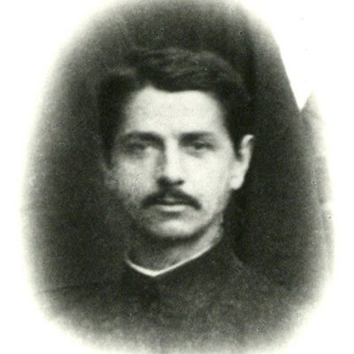

Isusovački blaženici
Brat
Bl. Ivan Pantalija
1887. – 1947.
Isusovački brat iz Prizrena služio je mladima u Skadru kao odgajatelj i umjetnički nadaren suradnik. Umro je nakon mučenja u komunističkom zatvoru.
Tekst je preveden i prilagođen uz pomoć umjetne inteligencije.

Izvor slike
- Spomendan
- 31. siječnja
- Zaštitništvo
- Nije navedeno u izvoru
- Životni vijek
- 1887. – 1947.
- Djelovanje
- Mladi i odgoj · Pisanje, znanost i umjetnost · Progoni i progonstvo · Mučeništvo
- Razdoblje
- 19., 20. stoljeće
- Ulazak u Družbu Isusovu
- 1906.
- Beatifikacija
- 5. studenoga 2016., papa Franjo
- Datum rođenja
- 02.06.1887.
- Mjesto rođenja
- Prizren, Kosovo
- Datum smrti
- 31.10.1947.
- Mjesto smrti/mučeništva
- Shkodër, Albanija (prema detaljnom katoličkom životopisu: bolnica)
- Okolnosti smrti/mučeništva
- Umro nakon dugotrajnoga mučenja, ozljeda i uskraćivanja liječničke skrbi.
- Uloga
- Brat
- Mučenik
- Da
- Ostale oznake
- Odgojitelj; glazbenik; pisac i organizator školskih kulturnih aktivnosti
- Pripadnost
- Isusovac
- Drugi oblici imena
- Gjon Pantalija · Gjon
- Napomene uz podatke
- Detaljni katolički životopis navodi smrt u bolnici nakon zatvorskoga mučenja i ozljeda. Službeni isusovački životopis navodi uskraćivanje skrbi, bez naziva ustanove.
Životopis
Gjon Pantalija rođen je 2. lipnja 1887. u Prizrenu. U mladosti je radio kao šegrt na gradskome bazaru. S majčine strane bio je rođak svete Terezije iz Kolkate. Godine 1906. stupio je u Družbu Isusovu, a novicijat obavio u Soresini u pokrajini Cremoni. Premda su mu poglavari predlagali svećenički put, prepoznao je vlastiti poziv u službi redovničkoga brata.
Poslan je u isusovački kolegij svetoga Franje Ksaverskoga u Skadru. U toj je odgojnoj ustanovi, iz koje su izlazili budući svećenici, učitelji, pravnici i javni djelatnici, obavljao različite zadaće: poučavao je, savjetovao učenike, pisao i pomagao njihovoj duhovnoj izgradnji. Posebno su dolazili do izražaja glazbeni i umjetnički darovi. Njegova služba nije bila vezana uz jedan predmet ili ured; mnoge društvene i kulturne djelatnosti kolegija oslanjale su se na njega.
Za Drugoga svjetskog rata pomagao je učenicima izbjegavati uhićenja pod talijanskom i njemačkom okupacijom. Nakon dolaska komunističke vlasti nastojao je sačuvati vrijedne predmete kolegija i pronaći odvjetnike spremne braniti uhićene svećenike. Vatikanski radio bilježi da je pokušavao održati školski rad koliko god je bilo moguće. Nakon uhićenja isusovaca Giovannija Faustija i Daniela Dajanija njegova je odgovornost za preostalu zajednicu postala osobito velika. Zatvaranje redovničkih škola nije ga navelo da napusti redovnički život; prihvatila ga je franjevačka zajednica.
Potom je i sam uhićen i podvrgnut dugotrajnu mučenju. Bio je zatočen u nekadašnjem franjevačkom samostanu u Gjuhadolu, pretvorenom u zatvor. Već fizički slomljen pokušao je pobjeći, pao i ozlijedio obje noge. Ostavljan bez potrebne skrbi umro je 31. listopada 1947. Njegova se smrt razlikuje od pogubljenja Faustija i Dajanija prethodne godine: nije umro u istoj skupini na stratištu. S njima je ipak uključen među 38 albanskih mučenika komunističkoga progona, proglašenih blaženima u Skadru 5. studenoga 2016. Njegov život svjedoči o apostolatu isusovačkoga brata kroz odgoj, kulturu i konkretnu pomoć ugroženima.
Život i nasljeđe
Pantalija je svjesno izabrao ostati brat premda je imao mogućnost puta prema svećeništvu. Njegov rad u školi obuhvaćao je i glazbu, kulturne programe i osobno vodstvo učenika. Tijekom ratnih promjena upravo su mu jezik i kulturno poznavanje ljudi pomagali posredovati za ugrožene. Nakon prestanka redovite školske službe prihvatila ga je franjevačka zajednica. To je važna veza između redova, različita od promjene njegova vlastitog zavjetnog identiteta. Njegov život pokazuje kako je bratski poziv uključivao širok odgojni utjecaj i nakon gubitka prvotnoga radnog mjesta.
Tekst je preveden i prilagođen uz pomoć umjetne inteligencije.
Pročitaj više na izvornoj stranici ↗